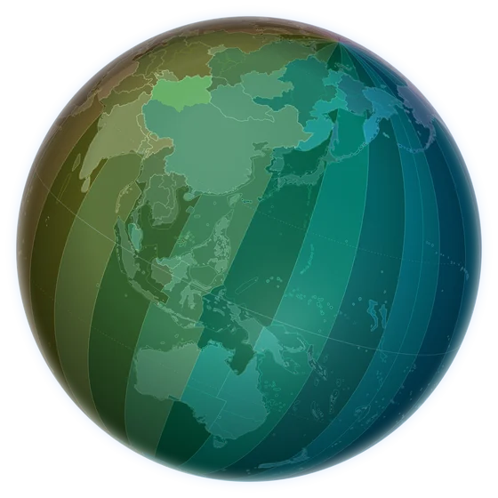
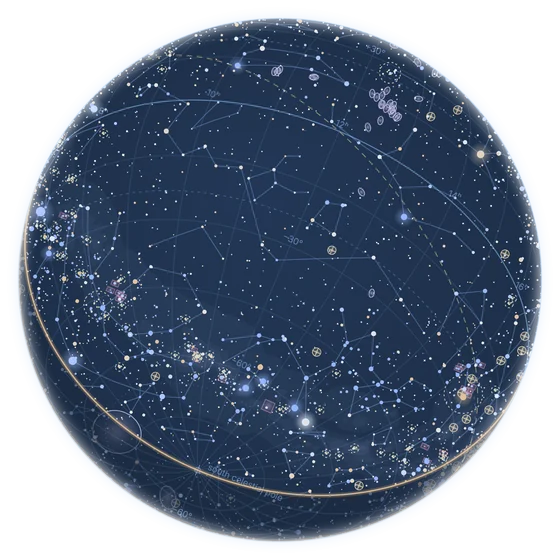
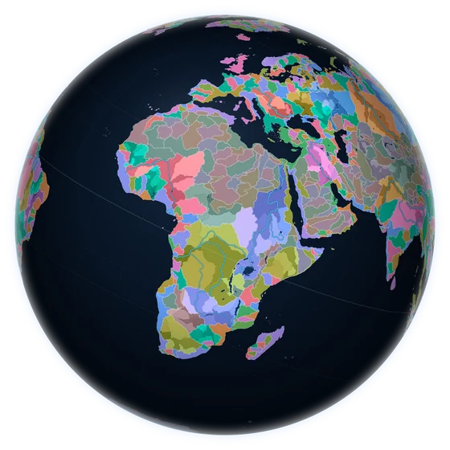
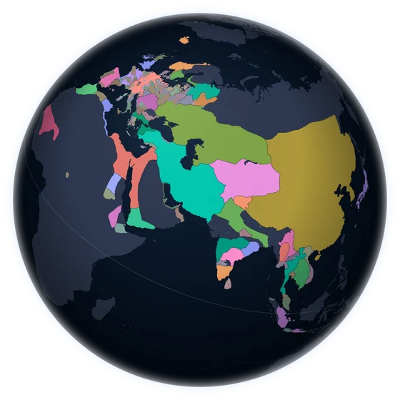

World Time Zones
Every time zone at once, with country borders, the line between day and night, and the local time and weather in major cities.
Find a city to see its time and weather, or watch the night move across the map.
Open World Time ZonesA growing collection of interactive globes, each showing one way of seeing the world. Turn them, zoom in, and follow whatever catches your eye.

World Time Zones
Celestial Globe
River Valleys
History AtlasEvery time zone at once, with country borders, the line between day and night, and the local time and weather in major cities.
Find a city to see its time and weather, or watch the night move across the map.
Open World Time ZonesThe sky from anywhere on Earth: stars down to eighth magnitude, the constellations, galaxies and clusters, the planets and their moons, the larger asteroids and the brighter satellites.
Set your town and a date, then turn the sky to see what is up tonight. It also works as a planisphere, an astrolabe and a clock.
Open the Celestial GlobeEvery river to its sea. Each outflow to the ocean has its own colour, and every tributary valley is a shade of it, through five levels of detail.
Zoom into any valley and hover over it to see which river drains it and where that water reaches the sea.
Open River ValleysWho held what, and when. Drag the timeline from 3400 BCE to today and the map redraws for the year, each line of succession in its own colour.
Pin a state to follow its line through the centuries: from Rome to Byzantium, or from the Franks to France.
Open the History AtlasMore globes are being made. The empty stands are waiting for them.